Publicaciones 2019
Perfil en Scopus de Ikiam: enlace
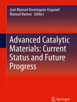
54.-Synthesis of novel catalytic materials: Titania nanotubes and transition metal carbides, nitrides, and sulfides (2019)
Davi Coelho de Carvalho, Josue Mendes Filho, Odair Pastor Ferreira, Alcineia Conceição Oliveira, Elisabete Moreira Assaf, Yanet Villasana
Advanced Catalytic Materials: Current Status and Future Progress. pp 13-40
Enlace:
https://link.springer.com/chapter/10.1007/978-3-030-25993-8_2
53.- Geologically recent rearrangements in central amazonian river network and their importance for the riverine barrier hypothesis (2019)
Ruokolainen Kalle, Moulatlet Gabriel, M., Zuquim Gabriel Hoorn, CarinaTuomisto, Hanna
Frontiers of Biogeography, Volume 11, Issue 3.
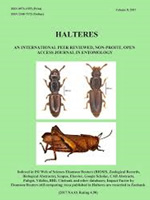
52.- Wing geometric morphometrics as a tool for taxonomic identification of two fly species (Diptera: Muscidae) of forensic relevance. (2019)
Nuñez, J.A., Pablo, J., Liria, J.
Halteres, 10, pp. 19-25.
51.- Parasitism of the isopod riggia puyensis rodríguez-haro et al. In two armored catfish from Pastaza Province (Ecuador). (2019)
Plaul, S.E., Rodríguez-Haro, C., Martorelli, S.R., Barbeito, C.G.
Anais da Academia Brasileira de Ciencias. 91(4), art. no. e20180849.
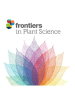
50.- Molecular Basis of C-30 Product Regioselectivity of Legume Oxidases Involved in High-Value Triterpenoid Biosynthesis. (2019)
Fanani, M.Z., Fukushima, E.O., Sawai, S., (...), Saito, K., Muranaka, T.
Frontiers in Plant Science, 10, art. no. 1520.
Enlace:
https://www.ncbi.nlm.nih.gov/pmc/articles/PMC6901910/
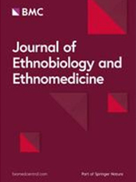
49.- Identifying indigenous practices for cultivation of wild saprophytic mushrooms: responding to the need for sustainable utilization of natural resources. (2019)
Wendiro, D., Wacoo, A.P., Wise, G.
Journal of ethnobiology and ethnomedicine. 15(1), p. 64
Enlace:
https://www.ncbi.nlm.nih.gov/pmc/articles/PMC6909573/
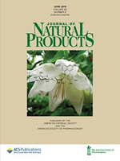
48.- Structure-Activity Relationships of Pentacyclic Triterpenoids as Inhibitors of Cyclooxygenase and Lipoxygenase Enzymes. (2019)
Vo, N.N.Q., Nomura, Y., Muranaka, T., Fukushima, E.O.
Journal of Natural Products. 82(12):3311-3320
47.- White sand vegetation in an Amazonian lowland under the perspective of a young geological history. (2019)
Rossetti, D. F., Moulatlet, G. M., Tuomisto, H., Gribel, R., Toledo, P. M., Valeriano, M. M., ... & Coelho, L. S.
Anais da Academia Brasileira de Ciências 91(4)
Enlace:
http://www.scielo.br/scielo.php?pid=S0001-37652019000700503&script=sci_arttext
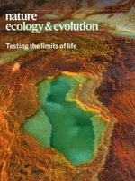
46.- Evolutionary diversity is associated with wood productivity in Amazonian forests. (2019)
Fernanda Coelho de Souza, Kyle G. Dexter, …. Maria C Peñuela Mora….Timothy R. Baker
Nature Ecology and Evolution. Article in Press
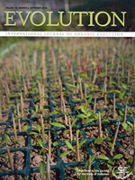
45.- Altitude and life-history shape the evolution of Heliconius wings. (2019)
Gabriela Montejo‐Kovacevich Jennifer E. Smith Joana I. Meier Caroline N. Bacquet Eva Whiltshire‐Romero Nicola J. Nadeau Chris D. Jiggins
Evolution. Article in Press
Enlace:
https://onlinelibrary.wiley.com/doi/full/10.1111/evo.13865
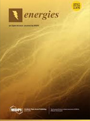
44.- Performance analysis of a small-scale biogas-based trigeneration plant: An absorption refrigeration system integrated to an externally fired microturbine. (2019)
Villarroel-Schneider, J., Malmquist, A., Araoz, J.A., Martí-Herrero, J., Martin, A.
Energies. 12(20),3830
Enlace:
https://ideas.repec.org/a/gam/jeners/v12y2019i20p3830-d274967.html
43.- Lotus japonicus Triterpenoid Profile and Characterization of the CYP716A51 and LjCYP93E1 Genes Involved in Their Biosynthesis In Planta. (2019)
Suzuki, H., Fukushima, E.O., Shimizu, Y., Seki, H., Fujisawa, Y., Ishimoto, M., Osakabe, K., Osakabe, Y., Muranaka, T.
Plant & cell physiology. 60(11), pp. 2496-2509.
Enlace:
https://academic.oup.com/pcp/article-abstract/60/11/2496/5550620
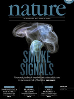
42.- Mapping 123 million neonatal, infant and child deaths between 2000 and 2017. (2019).
Burstein, R., Henry, N.J., Collison, M.L.,…Rubagotti E..., Murray, C.J.L., Hay, S.I.
Nature. 574(7778), pp. 353-358
41.- Unravelling the skin secretion peptides of the gliding leaf frog, Agalychnis spurrelli (hylidae). (2019)
Proaño-Bolaños C., Blasco-Zúñiga A., Almeida JR, Wang L, Llumiquinga MA., Rivera M., Zhou M., Chen T., Shaw C.
Biomolecules. 9(11),667
40.- Rarity of monodominance in hyperdiverse Amazonian forests. (2019)
ter Steege, H., Henkel, T.W., Helal, N., Marimon, B.S., Marimon-Junior, B.H., Huth, A., Groeneveld, J., Sabatier, D., Coelho, L.S., Filho, D.A.L., Salomão, R.P., Amaral, I.L., Matos, F.D.A., Castilho, C.V., Phillips, O.L., Guevara, J.E., Carim, M.J.V., Cárdenas López, D., Magnusson, W.E.
Scientific Reports. 9(1),13822
39.- Tracking development assistance for health from China, 2007-2017. (2019)
Angela E Micah, Yingxi Zhao, Catherine S Chen, Bianca S. Zlavog, Golsum Tsakalos, Abigail Chapin, Stephen Gloyd, Jost Jonas, Paul H Lee, Shiwei Liu, Man Tat Alexander Ng, Michael R Phillips, Enrico Rubagotti, Kun Tang, Shenglan Tang, Mustafa Younis, Yunquan Zhang, Christopher J L Murray, Joseph L Dieleman.
BMJ Global Health. 4(5), e001513
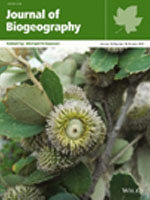
38.- Editorial. (2019)
Linder, H.P., Aspinall, R., Bonaccorso, E., Guayasamin, J.M., Hoorn, C., Ortega-Andrade, H.M.
Journal of Biogeography. 46(8), pp. 1625-1626
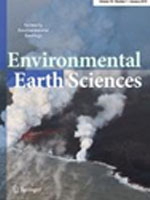
37.- Evaluating elastic wave velocities in Brazilian municipal solid waste. (2019)
Nataly Aranda, Renato L. Prado, Vagner R. Elis, Miriam Gonçalves Miguel, Otávio C. B. Gandolfo, Bruno Conicelli
Environmental Earth Sciences. 78(15),475
Enlace:
https://link.springer.com/article/10.1007/s12665-019-8490-y
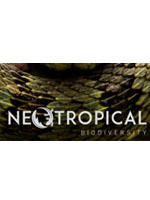
36.- Letter from the new Editor-in-Chief - Linking global priorities: biodiversity and scientific equity. (2019)
Guevara, J.
Neotropical Biodiversity. 5(1), pp. 1-2
Enlace:
https://www.tandfonline.com/doi/full/10.1080/23766808.2019.1579954
35.- Celebrating Alexander von Humboldt's 250th anniversary: Exploring bio- and geodiversity in the Andes (IBS Quito 2019). (2019)
Hoorn, C., Guayasamin, J.M., Ortega-Andrade, H.M., Linder, P., Bonaccorso, E.
Frontiers of Biogeography 11(2), e44178

34.- Identification of oxidosqualene cyclases from the medicinal legume tree Bauhinia forficata: a step toward discovering preponderant α-amyrin-producing activity. (2019)
Srisawat, P., Fukushima, E.O., Yasumoto, S., Robertlee, J., Suzuki, H., Seki, H., Muranaka, T.
New Phytologist. 224(1), pp. 352-366
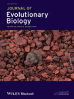
33.- Collective aggressiveness limits colony persistence in high- but not low-elevation sites at Amazonian social spiders. (2019)
Lichtenstein, J.L.L., Fisher, D.N., McEwen, B.L., Nondorf, D.T., Calvache, E., Schmitz, C., Elässer, J., Pruitt, J.N.
Journal of Evolutionary Biology
Enlace:
https://onlinelibrary.wiley.com/doi/abs/10.1111/jeb.13532
32.- Predicting suitable nesting sites for the Black caiman (Melanosuchus niger Spix 1825) in the Central Amazon basin. (2019)
Banon, G.P.R., Banon, G.J.F., Villamarín, F., Arraut, E.M., Moulatlet, G.M., Rennó, C.D., Banon, L.C., Marioni, B., Novo, E.M.L.D.M.
Neotropical Biodiversity. Volume 5, Issue 1, 1 January 2019, Pages 47-59
Enlace:
https://www.tandfonline.com/doi/full/10.1080/23766808.2019.1646066
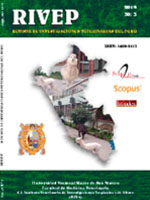
31.- Analysis of the antibody titre in sows vaccinated against classical swine fever at four gestation ages. (2019)
Noboa Velástegui, J.A., Acosta Batallas, A.J, Chávez Larrea, M.A., Fernández-Gómez, R.c,, Yánez Ortiz, I.P.
Revista de Investigaciones Veterinarias del Peru 30(2), pp. 939-945
Enlace:
http://www.scielo.org.pe/scielo.php?script=sci_arttext&pid=S1609-91172019000200043&lng=es&nrm=iso
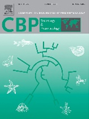
30.- Potential use of 13-mer peptides based on phospholipase and oligoarginine as leishmanicidal agents. (2019)
Mendes, B., Almeida, J.R., Vale, N., Gomes, P., Gadelha, F.R., Da Silva, S.L., Miguel, D.C
Comparative Biochemistry and Physiology Part - C: Toxicology and Pharmacology. Volume 226, December 2019, Article number 108612
Enlace:
https://www.sciencedirect.com/science/article/pii/S153204561930328X
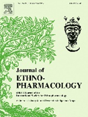
29.- Ethnopharmacology, phytochemistry and pharmacology of the genus Hedyosmum (Chlorantaceae): A review. (2019)
Radice, M., Tasambay, A., Pérez, A., Diéguez-Santana, K., Sacchetti, G., Buso, P., Buzzi, R., Vertuani, S., Manfredini, S., Baldisserotto, A.
Journal of ethnopharmacology. Volume 244, 15 November 2019, Page 111932
Enlace:
https://www.sciencedirect.com/science/article/pii/S0378874118326011
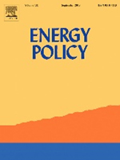
28.- Editorial: Perspectives on energy futures, environment and wellbeing. (2019)
Ulgiati, S., Agostinho, F., Liu, G., Ripa, M., Ramos Martin, J., Reddy, S.
Energy Policy. Volume 133, October 2019, Article number 110890.
Enlace:
https://www.sciencedirect.com/science/article/pii/S0301421519304689?via%3Dihub
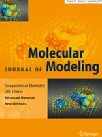
27.- Molecular modeling of four Dermaseptin-related peptides of the gliding tree frog Agalychnis spurrelli. (2019)
Cuesta, S., Gallegos, F., Arias, J., Pilaquinga, F., Blasco-Zúñiga, A., Proaño-Bolaños, C., Rivera, M., Meneses, L.
Enlace:
https://link.springer.com/article/10.1007%2Fs00894-019-4141-1
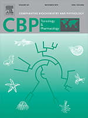
26.- Combined effects of temperature and copper on oxygen consumption and antioxidant responses in the mudflat fiddler crab Minuca rapax (Brachyura, Ocypodidae). (2019)
Capparelli, M. V., Bordon, I. C., Araujo, G., Gusso-Choueri, P. K., de Souza Abessa, D. M., & McNamara, J. C.
Comparative Biochemistry and Physiology Part C: Toxicology & Pharmacology, 223, 35-41.
Enlace:
https://www.sciencedirect.com/science/article/pii/S153204561930064X
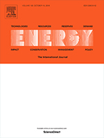
25.- Future oil extraction in Ecuador using a Hubbert approach. (2019)
Espinoza, V. S., Fontalvo, J., Martí-Herrero, J., Ramírez, P., & Capellán-Pérez, I. (2019).
Energy.
Enlace:
https://www.sciencedirect.com/science/article/pii/S0360544219311922
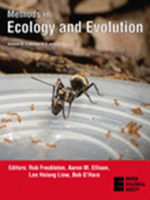
24.- Making the most of scarce data: Mapping soil gradients in data‐poor areas using species occurrence records. (2019)
Zuquim, G., Stropp, J., Moulatlet, G. M., Van doninck, J., Quesada, C. A., Figueiredo, F. O., ... & Tuomisto, H.
Methods in Ecology and Evolution.
Enlace:
https://besjournals.onlinelibrary.wiley.com/doi/abs/10.1111/2041-210X.13178
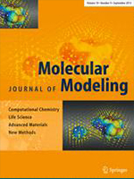
23.- Going north and south: The biogeographic history of two Malvaceae in the wake of Neogene Andean uplift and connectivity between the Americas. (2019)
Hoorn, C., van der Ham, R., de la Parra, F., Salamanca, S., ter Steege, H., Banks, H., ... & Rodriguez-Forero, G.
Review of Palaeobotany and Palynology, 264, 90-109.
Enlace:
https://www.sciencedirect.com/science/article/pii/S0034666718302173
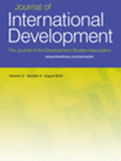
22.- Women's Empowerment in Ecuador: Differentiating the Impact of Two Interventions. (2019)
Ponce, J., Ramos‐Martin, J., & Intriago, R.
Journal of International Development, 31(3), 271-287.
Enlace:
https://onlinelibrary.wiley.com/doi/abs/10.1002/jid.3404
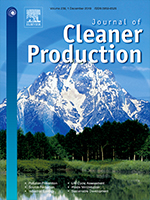
21.- Energy use of Jatropha oil extraction wastes: pellets from biochar and Jatropha shell blends. (2019)
Ramírez, V., Martí-Herrero, J.*, Romero, M., & Rivadeneira, D.
Journal of Cleaner Production.
Enlace:
https://www.sciencedirect.com/science/article/pii/S0959652619301490
20.- Toxic income as a trigger of climate change. (2019)
Falconí, F., Burbano, R., Ramos-Martin, J., Cango, P.
Sustainability, 11(8),2448
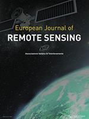
19.- Monitoring long-term forest dynamics with scarce data: a multi-date classification implementation in the Ecuadorian Amazon. (2019)
Santos, F., Meneses, P., & Hostert, P.
European Journal of Remote Sensing, 52(sup1), 62-78.
Enlace:
https://www.tandfonline.com/doi/full/10.1080/22797254.2018.1533793
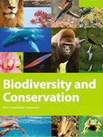
18.- The palm Mauritia flexuosa, a keystone plant resource on multiple fronts. (2019)
Van der Hoek*, Y., Solas, S. Á., & Peñuela, M. C.
Biodiversity and Conservation, 1-13.
Enlace:
https://link.springer.com/article/10.1007/s10531-018-01686-4
17.- Priorities and Interactions of Sustainable Development Goals (SDGs) with Focus on Wetlands. (2019)
Jaramillo, F., Desormeaux, A., Hedlund, J., Jawitz, J. W., Clerici, N., Piemontese, L., ... & Celi, J.
Water, 11(3), 619.
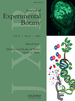
16.- Embryogenic competence of microspores is associated with their ability to form a callosic, osmoprotective subintinal layer. (2019)
Rivas-Sendra, A., Corral-Martínez, P., Porcel, R., Camacho-Fernández, C., Calabuig-Serna, A., & Seguí-Simarro, J. M.
Journal of experimental botany, 70(4), 1267-1281.
Enlace:
https://academic.oup.com/jxb/article/70/4/1267/5304891
15.- Seasonal environmental parameters influence biochemical responses of the fiddler crab Minuca rapax to contamination in situ. (2019)
Capparelli, M. V.*, Gusso-Choueri, P. K., de Souza Abessa, D. M., & McNamara, J. C.
Comparative Biochemistry and Physiology Part C: Toxicology & Pharmacology, 216, 93-100.
Enlace:
https://www.sciencedirect.com/science/article/pii/S1532045618301765
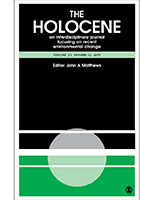
14.- A 12,700-year history of paleolimnological change from an Andean microrefugium. (2019)
de Novaes Nascimento, M., Laurenzi, A. G., Valencia, B. G., Van, R., & Bush, M.
The Holocene, 29(2), 231-243.
Enlace:
https://journals.sagepub.com/doi/abs/10.1177/0959683618810400
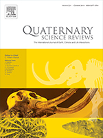
13.- A human role in Andean megafaunal extinction?. (2019)
Raczka, M. F.*, Mosblech, N. A., Giosan, L., Valencia, B. G., Folcik, A. M., Kingston, M., ... & Bush, M. B.
Quaternary Science Reviews, 205, 154-165.
Enlace:
https://www.sciencedirect.com/science/article/pii/S0277379118307005
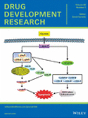
12.- Harnessing snake venom phospholipases A2 to novel approaches for overcoming antibiotic resistance. (2019)
Almeida, J. R., Palacios, A. L., Patiño, R. S., Mendes, B., Teixeira, C. A., Gomes, P., & da Silva, S. L.
Drug development research, 80(1), 68-85.
Enlace:
https://onlinelibrary.wiley.com/doi/full/10.1002/ddr.21456
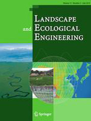
11.- Extinction debt in a biodiversity hotspot: the case of the Chilean Winter Rainfall-Valdivian Forests. (2019)
Noh, J. K.*, Echeverría, C., Pauchard, A., & Cuenca, P.
Landscape and Ecological Engineering, 15(1), 1-12.
Enlace:
https://link.springer.com/article/10.1007/s11355-018-0352-3
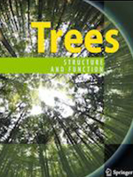
10.- Reproductive phenology variation of the multiple inflorescence-palm tree Wettinia maynensis in relation to climate, in a Piedmont forest in western Amazonia. (2019)
Peñuela, M. C., Bustillos-Lema, M., Álvarez-Solas, S., & Núñez-Avellaneda, L. A.
Trees, 1-10.
Enlace:
https://link.springer.com/article/10.1007/s00468-019-01824-7
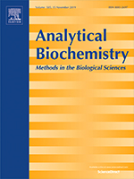
9.- Skin secretion transcriptome remains in chromatographic fractions suitable for molecular cloning. (2019)
Proaño-Bolaños, C.*, Zhou, M., Chen, T., & Shaw, C.
Analytical biochemistry, 564, 13-15.
Enlace:
https://www.sciencedirect.com/science/article/pii/S0003269718306985
8.- Discovering floristic and geoecological gradients across Amazonia. (2019)
Tuomisto, H., Van doninck, J., Ruokolainen, K., Moulatlet, G. M., Figueiredo, F. O., Sirén, A., ... & Zuquim, G.
Journal of Biogeography.
Enlace:
https://onlinelibrary.wiley.com/doi/abs/10.1111/jbi.13627
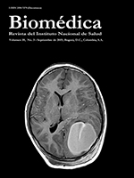
7.- Francisco Campos-Rivadeneira and Roberto Levi-Castillo: their lives and contributions to the study of mosquitoes (Diptera: Culicidae) in Ecuador. (2019)
Ramón, G. M., Pérez, R., & Jarrín, P.
Biomédica, 39.
Enlace:
https://revistabiomedica.org/index.php/biomedica/article/view/4415
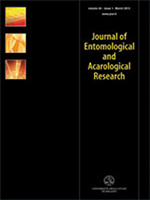
6.- High mosquito diversity in an Amazonian village of Ecuador, surrounded by a Biological Reserve, using a rapid assessment method. (2019)
Duque, P. L., Liria, J., Enríquez, S., Burgaleta, E., Salazar, J., Arrivillaga-Henríquez, J., & Navarro, J. C.
Journal of Entomological and Acarological Research, 51(1).
Enlace:
https://www.pagepressjournals.org/index.php/jear/article/view/7775
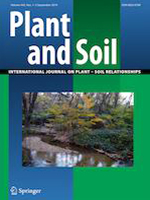
5.- The importance of soils in predicting the future of plant habitat suitability in a tropical forest. (2019)
Zuquim, G.*, Costa, F. R. C., Tuomisto, H., Moulatlet, G. M., & Figueiredo, F. O. G.
Plant and Soil, 1-20.
Enlace:
https://link.springer.com/article/10.1007/s11104-018-03915-9
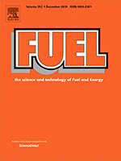
4.- Pollutant reduction and catalytic upgrading of a Venezuelan extra-heavy crude oil with Al2O3-supported NiW catalysts: Effect of carburization, nitridation and sulfurization. (2019)
Villasana, Y.*, Méndez, F. J., Luis-Luis, M., & Brito, J. L.
Fuel, 235, 577-588.
Enlace:
https://www.sciencedirect.com/science/article/pii/S0016236118314169
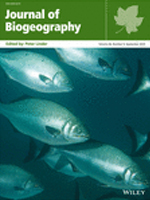
3.- Could coastal plants in western Amazonia be relicts of past marine incursions?. (2019)
Bernal, R., Bacon, C. D., Balslev, H., Hoorn, C., Bourlat, S. J., Tuomisto, H., ... & Antonelli, A.
Journal of Biogeography.
Enlace:
https://onlinelibrary.wiley.com/doi/full/10.1111/jbi.13560
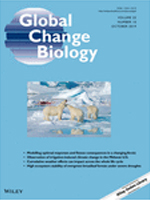
2.- Compositional response of Amazon forests to climate change. (2019)
Esquivel‐Muelbert, A*., Baker, T. R., Dexter, K. G., Lewis, S. L., Brienen, R. J., Feldpausch, T. R., ... Peñuela, M. C,… & Higuchi, N.
Global change biology, 25(1), 39-56.
Enlace:
https://onlinelibrary.wiley.com/doi/full/10.1111/gcb.14413
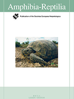
1.- A review on crocodilian nesting habitats and their characterisation via remote sensing, Amphibia-Reptilia, , 1-21. (2019)
Banon, G., Arraut, E., Villamarín, F., Marioni, B., Moulatlet, G., Rennó, C., Banon, G., & Novo, E.
doi: https://doi.org/10.1163/15685381-20191159
Publicaciones 2020
Perfil en Scopus de Ikiam: enlace
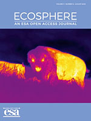
37.- Spatial and temporal variation of forest net primary productivity components on contrasting soils in northwestern Amazon (2020)
Jiménez, E.M., Peñuela-Mora, M.C., Moreno, F., Sierra, C.A. Ecosphere, 11(8), art. no. e03233.
Enlace:
https://esajournals.onlinelibrary.wiley.com/doi/full/10.1002/ecs2.3233
36.- Warning about conservation status of forest ecosystems in tropical Andes: National assessment based on IUCN criteria (2020)
Noh, J.K., Echeverria, C., Kleemann, J., (...), Fürst, C., Cuenca, P.
PloS one, 15(8), p. e0237877
Enlace:
https://journals.plos.org/plosone/article?id=10.1371/journal.pone.0237877
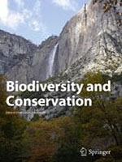
35.- The role of environmental filtering, geographic distance and dispersal barriers in shaping the turnover of plant and animal species in Amazonia (2020)
Dambros, C., Zuquim, G., Moulatlet, G.M., (...), Zuanon, J., Magnusson, W.E.
Biodiversity and Conservation.
Enlace:
https://link.springer.com/article/10.1007/s10531-020-02040-3
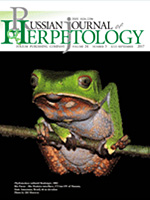
34.- Morphometric differentiation and diet of engystomops pustulosus (Amphibia: Leptodactylidae) in three populations from Colombia (2020)
Atencia, P., Solano, L., Liria, J.
Russian Journal of Herpetology, 27(3), pp. 156-164.
Enlace:
http://rjh.folium.ru/index.php/rjh/article/view/1479
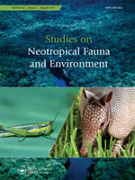
33.- Highest bush dog (Speothos venaticus) record for Ecuador with a potential association to a palm tree (Socratea rostrata) (2020)
Sara Álvarez, Lucas Ramis, María Cristina Peñuela
Studies on Neotropical Fauna and Environment. Vol.55
Enlace:
https://www.tandfonline.com/doi/full/10.1080/01650521.2020.1809973?scroll=top&needAccess=true
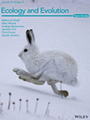
32.- Wildlife roadkill patterns in a fragmented landscape of the Western Amazon (2020)
Jonathan Filius, Yntze van der Hoek, Pablo Jarrín‐V, Pim van Hooft
Ecology and Evolution. 10(3)
Enlace:
https://onlinelibrary.wiley.com/doi/full/10.1002/ece3.6394
31.- Nurturing resilient forest biodiversity: Nest webs as complex adaptive systems (2020)
José Tomás Ibarra, Kristina L. Cockle, Tomás A. Altamirano, Yntze van der Hoek, Suzanne W. Simard, Cristián Bonacic, Kathy Martin
Ecology and Society. 25(2):27
30.- Biased-corrected richness estimates for the Amazonian tree flora (2020)
Hans ter Steege, Paulo I. Prado, …María Cristina Peñuela…..Georgia Pickavance
Scientific Reports. 10, Article number: 10130 (2020)
29.- EFL classroom management (2020)
Ligia Fernanda Espinosa Cevallos, Sandy Soto
Mextesol Journal. 44(2)
Enlace:
https://www.researchgate.net/publication/341220237_EFL_Classroom_Management
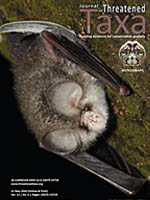
28.- Diversity and synanthropy of flies (Diptera: Calyptratae) from Ecuador, with new records for the country (2020)
Karen Blancio, Jonathan Liria, Ana Soto-Vivas
Journal of Threatened Taxa. 12(8), pp. 15784- 15793
Enlace:
https://threatenedtaxa.org/index.php/JoTT/article/view/5479
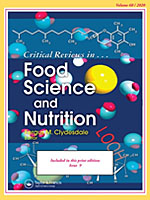
27.- A critical review of the composition and history of safe use of guayusa: a stimulant and antioxidant novel food (2020)
Wise Graham, Negrin Adam
Critical Reviews in Food Science and Nutrition. 60(14):2393-2404.
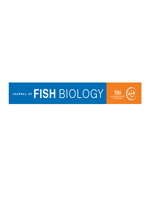
26.- Feeding of Arapaima sp.: integrating stomach contents and local ecological knowledge (2020)
Cristina M. Jacobi, Francisco Villamarín, João V. Campos‐Silva, Timothy Jardine, William E. Magnusson
Journal of Fish Biologoy.
Enlace:
https://onlinelibrary.wiley.com/doi/abs/10.1111/jfb.14372
25.-Icebergs of expertise-based leadership: The role of expert leaders in public administration (2020)
Sadia Hanif, Ali Ahsan, Graham Wise
Sustainability 2020, 12(11), 4544
24.- New record of a feral population of Lithobates catesbeianus Shaw, 1802 in a protected area (Santay Island) in the Ecuadorian coast (2020)
Carlos Cruz-Cordovez, Ileana Herrera, Felipe Espinoza, Kimberly Rizzo, María-Bethsabeth Sarmiento, Nicole Rodas, María-José Coello, Wilver Bravo, Margarita Lampo
BioInvasions Records (2020) Volume 9, Issue 2: 421–433
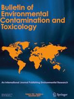
23.- Tissue Accumulation and the Effects of Long-Term Dietary Copper Contamination on Osmoregulation in the Mudflat Fiddler Crab Minuca rapax (Crustacea, Ocypodidae) (2020)
M. V. Capparelli, J. C. McNamara & M. G. Grosell
Bulletin of Environmental Contamination and Toxicology. 104, pages755–762(2020).
Enlace:
https://link.springer.com/article/10.1007/s00128-020-02872-3
22.- Production of the bioactive plant-derived triterpenoid morolic acid in engineered Saccharomyces cerevisiae. (2020)
Pisanee Srisawat, Shuhei Yasumoto, Ery O. Fukushima, Jekson Robertlee, Hikaru Seki, Toshiya Muranaka
Biotechonology and Bioengineering. Volume 117, Issue 6
Enlace:
https://onlinelibrary.wiley.com/doi/10.1002/bit.27357
21.- Microclimate buffering and thermal tolerance across elevations in a tropical butterfly. (2020)
Gabriela Montejo-Kovacevich, Simon H. Martin, Joana I. Meier, Caroline N. Bacquet, Monica Monllor, Chris D. Jiggins, Nicola J. Nadeau
The Journal of Experimental Biology. 2020 223: jeb220426
20.- Long-term thermal sensitivity of Earth's tropical forests. (2020)
Martin J. P. Sullivan, Simon L. Lewis, Kofi Affum-Baffoe, Carolina Castilho, Flávia Costa,….María Cristina Peñuela Mora,…..Pieter A. Zuidema, Joeri A. Zwerts, Oliver L. Phillips.
Science. Vol. 368, Issue 6493, pp. 869-874.
19.- Uncertainties associated with trophic discrimination factor and body size complicate calculation of δ15N‐derived trophic positions in Arapaima sp. (2020)
Cristina Mariana Jacobi, Francisco Villamarín, Timothy D. Jardine, William Ernest Magnusson
Ecology of Freshwater Fish, Volume 29, Issue 2.
Enlace:
https://onlinelibrary.wiley.com/doi/abs/10.1111/eff.12553
18.- Panmixia across elevation in thermally sensitive Andean dung beetles (2020)
Ethan B. Linck, Jorge E. Celi, Kimberly S. Sheldon
Ecology and Evolution. Volume 10, Issue 8.
Enlace:
https://onlinelibrary.wiley.com/doi/full/10.1002/ece3.6185
17.- A checklist of Diptera collected in the Caña de Azúcar morgue of Aragua, Venezuela (2020)
Nuñez Rodríguez, J., Bonilla Villarreal, M., Liria, J.
Egyptian Journal of Forensic Sciences, 10(1), art. no. 10.
Enlace:
https://link.springer.com/article/10.1186/s41935-020-00185-4
16.- RGCxGC toolbox: An R-package for data processing in comprehensive two-dimensional gas chromatography-mass spectrometry (2020)
Quiroz-Moreno, C., Furlan, M.F., Belinato, J.R., (...), Alexandrino, G.L., Mogollón, N.G.S.
Microchemical Journal, 156, art. no. 104830.
Enlace:
https://www.sciencedirect.com/science/article/abs/pii/S0026265X20304914
15.- Primer registro de depredación de un gecko por un parúlido (Setophaga petechia aurea) en las Islas Galápagos (2020)
Rojas-Soto, O., Ortega-Andrade, M.
Neotropical Biodiversity, 6(1), pp. 60-61
Enlace:
https://www.tandfonline.com/doi/full/10.1080/23766808.2020.1738030
14.- Global fern and lycophyte richness explained: How regional and local factors shape plot richness. (2020)
Weigand, A., Abrahamczyk, S., Aubin, I., Bita‐Nicolae, C., Bruelheide, H., I. Carvajal‐Hernández, C., ... & Gasper, A. L. D.
Enlace:
https://onlinelibrary.wiley.com/doi/full/10.1111/jbi.13782
13.- Inclusive higher education governance: managing stakeholders, strategy, structure and function. (2020)
Wise Graham, Connie Dickinson, Tuntiak Katan, María Cristina Gallegos. Studies in Higher Education, Volume 45, 2020 - Issue 2.
Enlace:
https://srhe.tandfonline.com/doi/abs/10.1080/03075079.2018.1525698#.XmE5DUp7nIV
12.- Correction: Priorities and interactions of sustainable development goals (SDGs) with focus on wetlands. (2020)
Fernando Jaramillo, Amanda Desormeaux , Johanna Hedlund , James W. Jawitz , Nicola Clerici , Luigi Piemontese , Jenny Alexandra Rodríguez-Rodriguez , …. Jorge Celi,… Diandian Xu, David Zamora, Alan D. Ziegler and Imenne Åhlén. Water (Switzerland), 11(3), 619
11.- Long-Term Monitoring Reveals Population Decline of Spectacled Caimans (Caiman crocodilus) at a Black-Water Lake in Ecuadorian Amazon. (2020)
Diego A. Ortiz, Juan F. Dueñas, Francisco Villamarín, Santiago R. Ron Journal of Herpetology, Vol. 54(No. 1):31-38 January 2020
Enlace:
https://bioone.org/journals/journal-of-herpetology/volume-54/issue-1
10.- Genomic and Fitness Consequences of Genetic Rescue in Wild Populations. (2020)
Sarah W.Fitzpatrick, Gideon S.Bradburd, Colin T.Kremer, Patricia E. Salerno, Lisa M.Angeloni, W. ChrisFunk Current Biology, Volume 30, Issue 3, 3 February 2020, Pages 517-522.e5.
Enlace:
https://www.sciencedirect.com/science/article/pii/S0960982219315325
9.- The gastromyzophorous tadpoles of Atelopus elegans and A. palmatus (Anura: Bufonidae), with comments on oral and suction structures. (2020)
Marcillo-Lara, A., Coloma, L.A., Álvarez-Solas, S., Terneus
Neotropical Biodiversity 6(1), pp. 1-13
Enlace:
https://www.tandfonline.com/doi/full/10.1080/23766808.2019.1709378
8.- Heterogenization of Co(II)- and Cu(II)-complexes containing a terpyridine-based Schiff base macrocyclic ligand on thiol-functionalized mesostructured silica. (2020)
Solórzano, C., Méndez, F.J., Brito, J.L., (...), Anacona, J.R., Bastardo-González
Journal of Organometallic Chemistry. Volume 908, 121073
Enlace:
https://www.sciencedirect.com/science/article/pii/S0022328X19305169

7.- Assessing the stability of historical and desiccated snake venoms from a medically important Ecuadorian collection. (2020)
Almeida, J.R., Mendes, B., Patiño, R.S.P., (...), Caldeira, C.A.D.S., da Silva, S.L.
Comparative Biochemistry and Physiology Part – C. Volume 230, April 2020, 108702
Enlace:
https://www.sciencedirect.com/science/article/abs/pii/S1532045620300028
6.- 2,100 years of human adaptation to climate change in the High Andes. (2020)
Åkesson, C.M., Matthews-Bird, F., Bitting, M., (...), Valencia, B.G., Bush, M.B.
Nature Ecology and Evolution. 4, pages66–74
Enlace:
https://www.nature.com/articles/s41559-019-1056-2?proof=trueNov
5.- Ketone Body Metabolism: Love and Survival. (2020)
Bravo, M.E.P., Patiño, R.S.P., Almeida, J.R.
Biochemistry and Molecular Biology Education
4.- Multispectral canopy reflectance improves spatial distribution models of Amazonian understory species. (2020)
Doninck, J.V., Jones, M.M., Zuquim, G., Ruokolainen, K., Moulatlet, G.M., Sirén, A., Cárdenas, G., Lehtonen, S., Tuomisto, H.
Ecography
Enlace:
https://onlinelibrary.wiley.com/doi/full/10.1111/ecog.04729
3.- An integrative approach to identify the impacts of multiple metal contamination sources on the Eastern Andean foothills of the Ecuadorian Amazonia. (2020)
Capparelli, M.V., Moulatlet, G.M., Abessa, D.M.D.S., (...), Ochoa-Herrera, V., Cipriani-Avila, I.
Science of the Total Environment, 709, art. no. 136088.
Enlace:
https://www.sciencedirect.com/science/article/pii/S004896971936084X?via%3Dihub
2.- Management and design of biogas digesters: A non-calibrated heat transfer model. (2020)
Vilms Pedersen, S., Martí-Herrero, J., Singh, A.K., Sommer, S.G., Hafner, S.D.
Bioresource Technology. 296,122264
Enlace:
https://www.sciencedirect.com/science/article/pii/S0960852419314944
1.- Biogas based polygeneration plant options utilizing dairy farms waste: A Bolivian case. (2020)
Villarroel-Schneider, J., Mainali, B., Martí-Herrero, J., (...), Martin, A., Alejo, L.
Sustainable Energy Technologies and Assessments
Enlace:
https://www.journals.elsevier.com/sustainable-energy-technologies-and-assessments